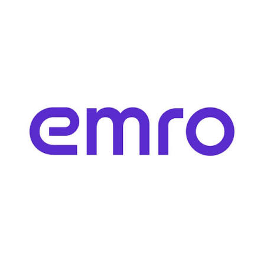

엠로 emro
재직 중- 현대모비스 원가재료비 관리 프로젝트의 원가 산정 로직 개발
- emroCloud 고객문의 데이터 구조 개선 및 Jira 연동 API 개발
- 일괄결재 동시성 제어, 오류 로그 보존과 대량 운영 데이터 정리
JavaSpring FrameworkOracle / DB2MyBatis
Java · Spring · SQL
정합성과 안정성을 고민합니다.
현업 담당자와 소통하며 업무의 맥락을 파악하고, 기능과 데이터의 정합성을 함께 고려해 개발합니다. 온프레미스 레거시 환경에서도 데이터 접근 경로와 I/O를 살피며 SQL과 처리 방식을 검토해 왔습니다.
실무에서 마주한 고민을 체계화하기 위해 데이터 모델링과 SQL 튜닝을 학습하며 SQLP를 취득했습니다. 주어진 시스템에서 개선할 지점을 꾸준히 찾아가는 개발자를 지향합니다.
유재건 · Jaegeon Yu
Backend Developer
엠로(emro) · 2024.09 — 현재
데이터 정합성 · SQL · 서비스 운영
업무를 데이터 구조로 옮기고,
운영 중인 서비스의 안정성을 높였습니다.

분석과 공유도 개발의 일부로 생각합니다.
Claude Code를 활용해 SaaS 구매 서비스를 분석하고, 온보딩 문서를 작성·공유했습니다.
현대모비스 원가재료비 관리
Excel로 수작업 관리하던 원가 산정 업무를 시스템으로 옮기면서, 개발 단계·품목·원가요소 간 관계와 다양한 계산 조건을 반영해야 했습니다.
구매원가팀과 요구사항을 검증하며 환율·관리비·LDC율·단가에 따른 원가 차이 산정 로직을 설계했습니다. 현업 계산식과 시스템 결과를 비교하고, 환차액 누락으로 최종 단가에 0.07% 차이가 발생하는 원인을 분석했습니다.
누락된 계산 요인을 확인해 결과의 정합성을 확보했습니다. 반복 계산을 시스템화하고, 원가 차액을 원인별로 살펴볼 수 있도록 결과를 제공했습니다.
emroCloud · 데이터 모델 / 외부 연동
기존의 1문의 1답변 구조로는 대화형 문의 이력을 관리하기 어려웠습니다. Jira 연동에서는 첨부파일과 콘텐츠 제약사항을 함께 처리해야 했습니다.
요청과 진행 이력을 분리한 정규화 구조로 개선하고, 상태별 데이터 이관 기준을 설계했습니다. 문의·진행 내용·첨부파일을 Jira Issue와 Comment에 연결하는 REST API를 개발하고 Multipart 전송 및 파일명·댓글 링크 제약을 분석했습니다.
기존 데이터를 대화형 구조로 이관했습니다. Base64 이미지로 인한 콘텐츠 제한 문제는 S3 기반 구조로 변경해 연동 안정성을 개선했습니다.
emroCloud · 동시성 / 트랜잭션
비동기·스케줄러 기반 결재 처리에서 중복 요청을 방지하고, 예외 발생 시에도 원인을 추적할 수 있는 오류 로그를 남겨야 했습니다.
결재 상태 컬럼을 추가해 낙관적 동시성 제어를 적용했습니다. 비즈니스 트랜잭션과 오류 로그 트랜잭션을 분리해 업무 처리의 실패가 로그 기록까지 되돌리지 않도록 개선했습니다.
처리 중인 결재 건의 중복 요청을 방지하고 순차적으로 처리하도록 개선했습니다. 예외 발생 시에도 오류 로그를 보존하도록 트랜잭션 구조를 변경했습니다.
emroCloud · 로그 / 메일 발송 이력
로그와 메일 발송 이력 등 보존기간이 지난 데이터가 누적되며 DB 사용량이 증가했습니다. 운영 DB의 부하를 고려한 삭제 방식이 필요했습니다.
보존기간을 기준으로 정리 대상을 분석하고, 약 2억 건 규모의 데이터에 ROWID 기반 Batch Delete와 주기적 COMMIT을 적용했습니다.
Undo·TEMP 및 운영 DB 부하를 고려한 대량 데이터 정리 방식을 구현하고 보존기간이 지난 데이터를 정리했습니다.
취업 전 팀 프로젝트에서 백엔드 개발과 배포 환경을 함께 경험했습니다.
국회의원 활동현황 · 정치뉴스 서비스
뉴스와 연관 키워드를 함께 조회하는 1:N 관계에서 페이징과 Fetch Join을 함께 적용하면서 메모리 페이징 경고가 발생했습니다.
페이지에 해당하는 ID를 먼저 조회하고, 해당 ID의 연관 데이터를 Fetch Join으로 가져오도록 쿼리를 분리했습니다. 뉴스 API 개발, EC2·Docker 배포 환경 관리와 Jenkins CI/CD 구축도 담당했습니다.
페이징 대상과 연관 데이터 조회 단계를 분리했습니다. Docker와 UFW의 필터 적용 순서도 점검해 의도한 방화벽 정책을 적용했습니다.
스토리 작가를 위한 작품 설정 시각화
수작업 배포는 담당자에게 의존했고, 프론트엔드와 백엔드 연동 과정에서는 CORS 오류가 발생했습니다.
팀·유저 API와 Spring Security Voter 기반 팀 단위 인가 로직, JUnit 5 테스트를 구현했습니다. Jenkins 파이프라인과 리버스 프록시를 구축하고, CORS에서는 Origin과 OPTIONS 요청 처리를 점검했습니다.
브랜치 머지를 통한 자동 배포 환경을 구축했습니다. 외부 접근을 프록시로 모으고, 프록시에서 SSL을 처리하도록 배포 구조를 구성했습니다.
관광지 리뷰 · 관심지역 실시간 알림
이메일 인증 요청의 SMTP 통신 지연과 함께, API 명세서만으로는 프론트엔드 팀원과 처리 순서를 공유하기 어렵다는 문제가 있었습니다.
멀티스레드를 활용해 SMTP 통신을 비동기 처리했습니다. Open API 데이터 적재, 관광지·유저·리뷰·지역 API, JWT 인증·인가, SSE 기반 관심지역 실시간 알림과 배포 환경도 담당했습니다.
당시 프로젝트 측정에서 이메일 인증 요청 응답을 3초 이상에서 0.5초 미만으로 줄였습니다. 이 수치는 요청 응답 시간이며 이메일 도착 시간을 의미하지 않습니다.
API 명세서만으로 설명했을 때 생기던 구현 방향의 차이를 줄이기 위해, 지역 팔로우·회원가입·로그인의 요청과 응답 흐름을 시퀀스 다이어그램으로 정리해 GitHub에 공유했습니다. 프론트엔드 팀원과 처리 순서를 시각적으로 확인하며 더 빠르고 정확하게 의견을 맞추고 피드백을 받을 수 있었습니다.
서버에서 클라이언트로 보내는 단방향 알림에 맞춰 SSE를 선택했습니다. 연결의 생성·종료 콜백을 고려해 Emitter 저장소에는 ConcurrentHashMap을 사용했습니다.
팔로워를 조회한 뒤 반복해서 알림을 삽입하던 처리를 INSERT INTO … SELECT로 바꿔 다중행 삽입을 한 문장으로 처리했습니다. 선택한 알림의 읽음 처리는 MyBatis foreach와 IN 조건으로 묶었습니다.
B2B 서비스의 업무 로직과 데이터 처리 개발
REST API · 트랜잭션 · 인증과 인가

SQL 작성 · 대량 데이터 정리 · 데이터 구조 개선
업무 요건에 맞춘 SQL과 객체 매핑
팀 프로젝트 컨테이너 배포와 네트워크 구성
취업 전 프로젝트 데이터 모델링과 저장
프로젝트 서버 운영 · S3 기반 파일 연동
팀 프로젝트 빌드와 배포 파이프라인 구축
함께 사용한 기술 DB2 · JPA · Querydsl · Git · Jira
데이터 모델링과 SQL 튜닝 학습을 통해 실무의 고민을 체계화했습니다.
데이터와 소프트웨어 개발의 기본기를 쌓았습니다.
Java 기반 백엔드 교육과 팀 프로젝트를 수행했습니다. SSAFY 프로젝트 경진대회 우수상·최우수상을 수상했습니다.
자료구조, 운영체제, 데이터베이스, 네트워크를 학습하고 지문 기반 본인인증 앱의 백엔드 개발을 담당했습니다.
업무의 맥락과 데이터의 흐름을 함께 고민하는 팀과
더 나은 서비스를 만들어가고 싶습니다.